Projets
Ajoute ici ton texte explicatif pour ce projet.

Ajoute ici ton texte explicatif pour ce projet.

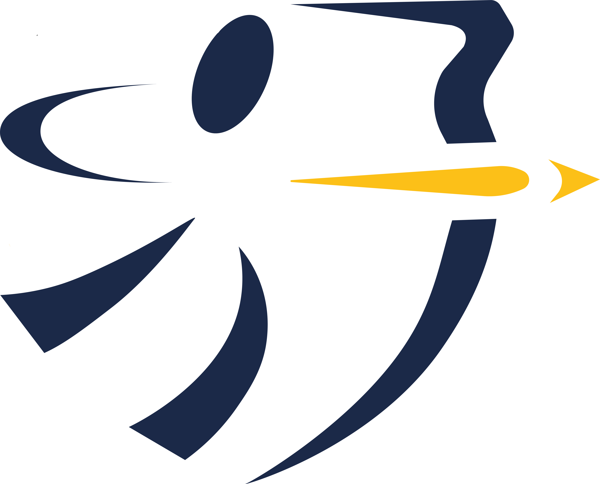
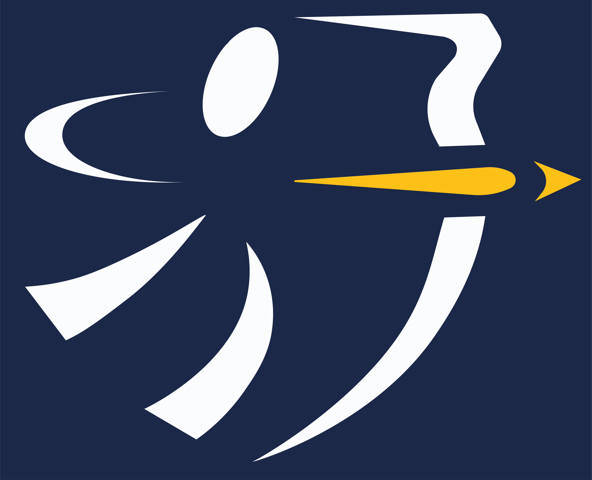
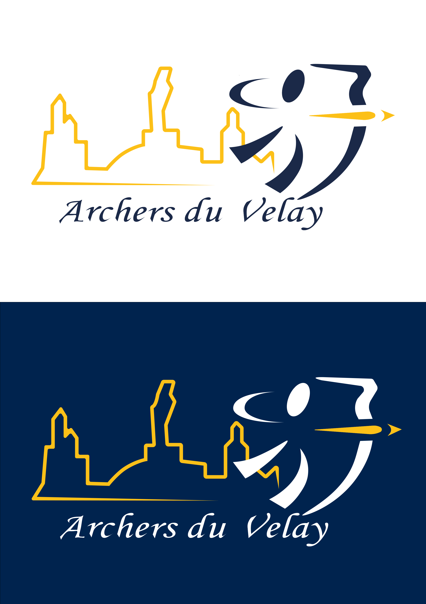
Ajoute ici ton texte explicatif pour ce projet.
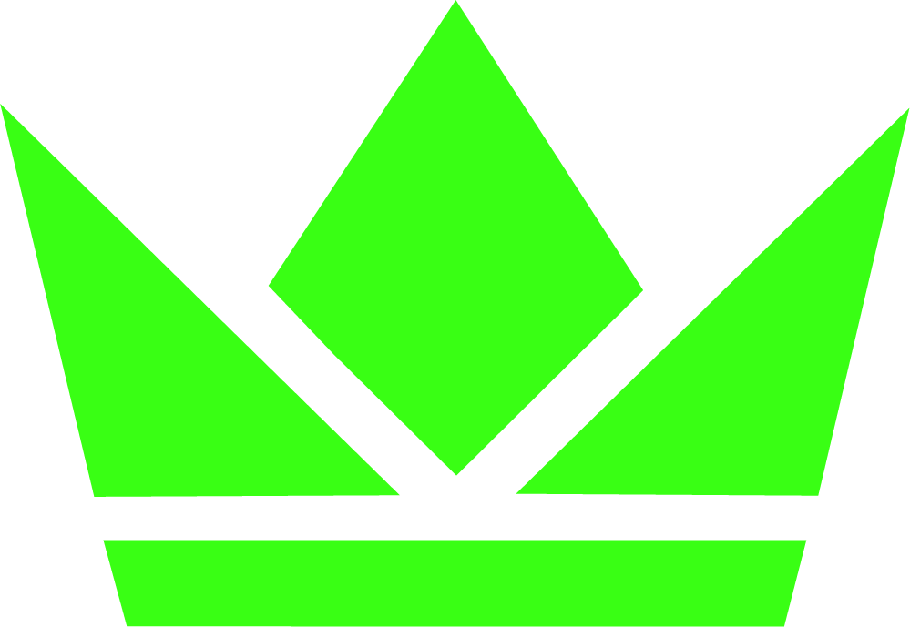

J'ai créé un visuel pour le match de football amical de préparation à la coupe du monde 2026 entre la France et l'Irlande du Nord.
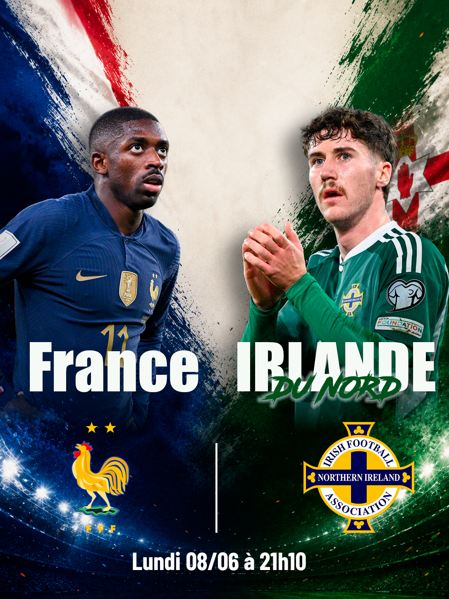
Dans le cadre de ma formation, avec mon groupe de projet, on devait créer un produit pour une marque française qui rayonne à l'internationale. Il nous fallait créer une vidéo promotionnelle pour le lancement du nouveau produit. Ainsi, que toute une stratégie de communication qui inclus des publication instagram, des affiches et un site web avec WordPress.
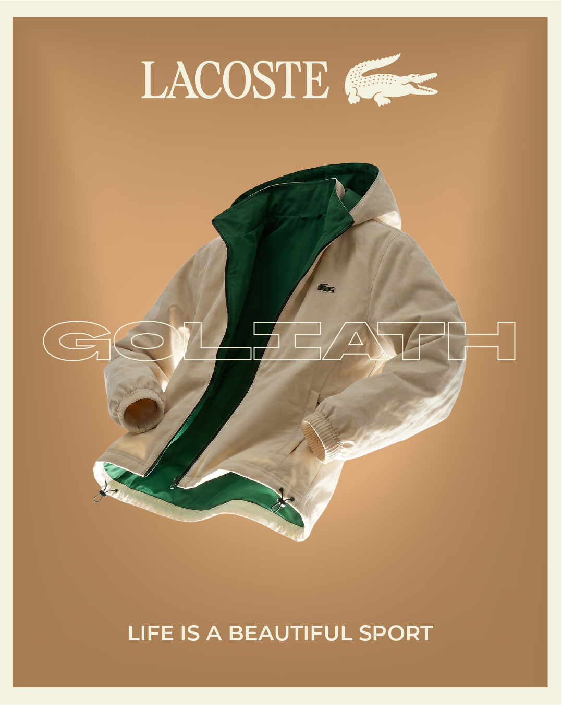


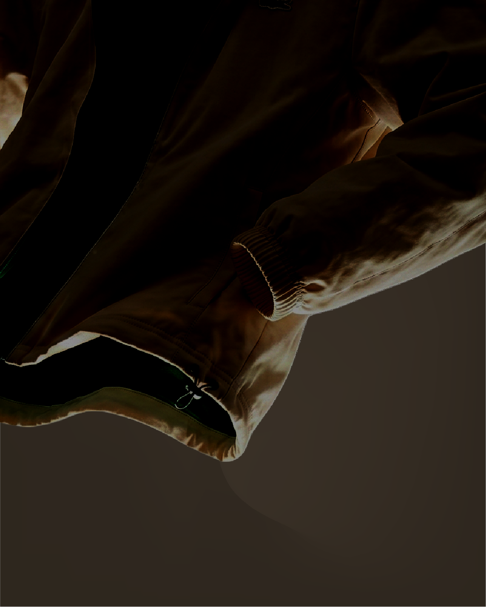
Ajoute ici ton texte explicatif pour ce projet.
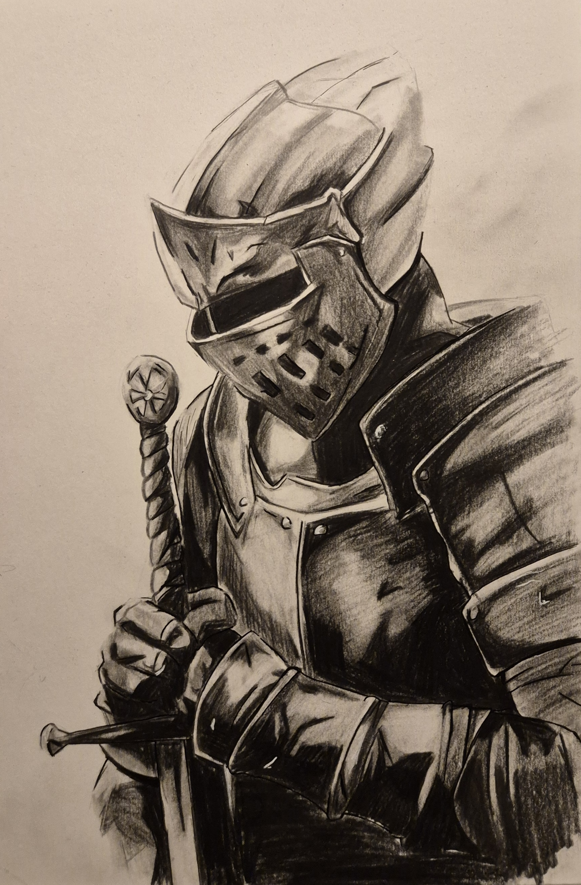

Voici quelques photographies que j'ai pu réaliser dans différentes situations.
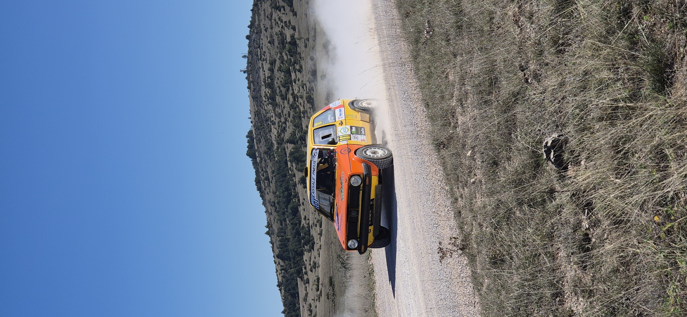
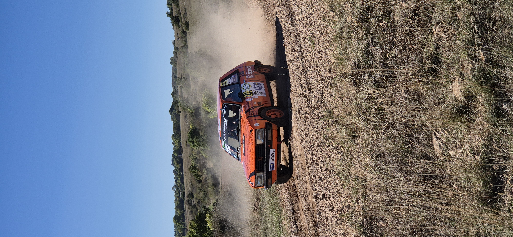
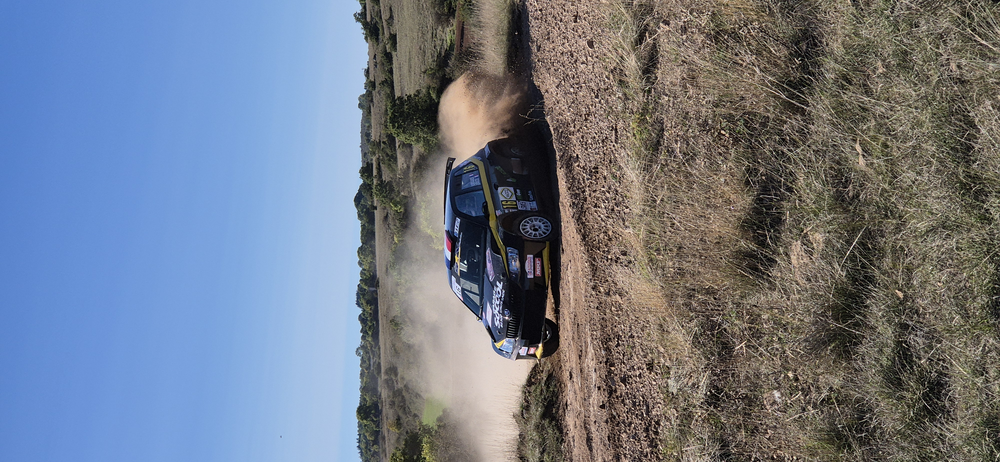
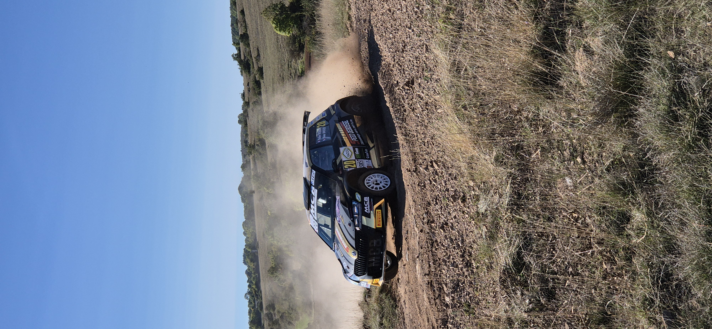